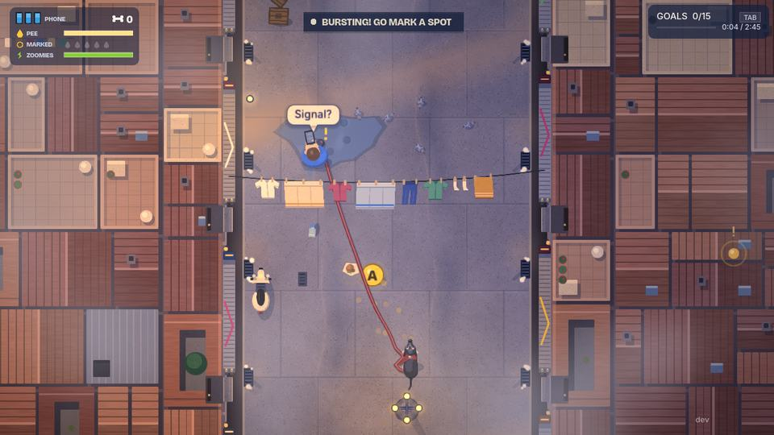
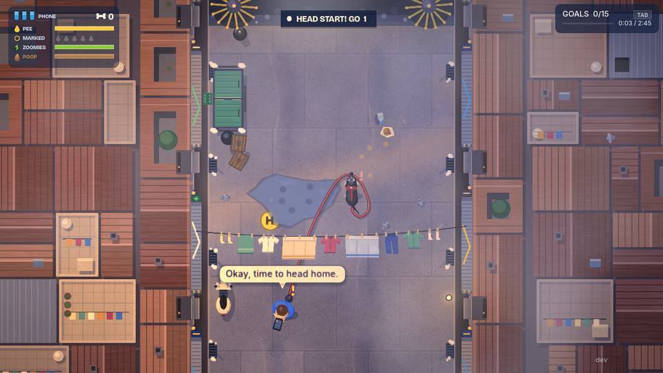
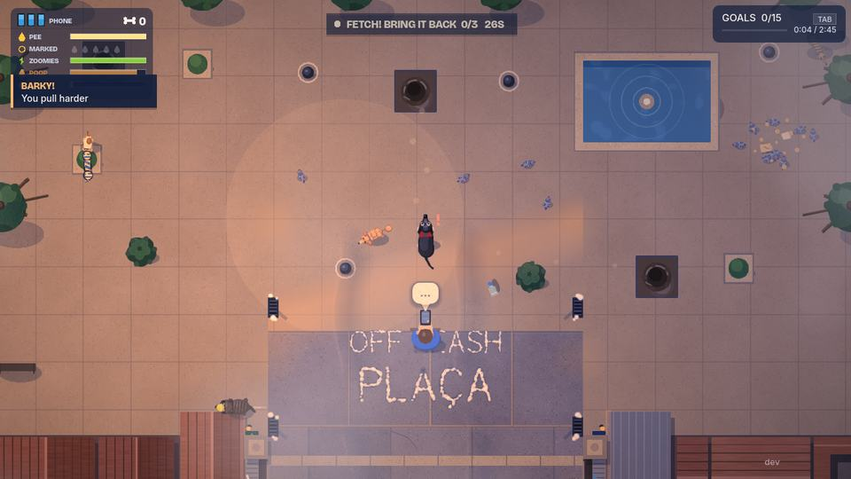

The city's dawn clean-up
Barcelona before the shutters roll up: municipal street sweepers hiss along quiet dawn alleys with sudsy water jets and spinning brushes. Once you reach the square, one determined machine turns the corner behind you and pushes the whole run back home.


